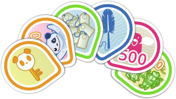

Fedora Badges
Federated badges for freedom.
David Gay
- https://github.com/oddshocks
- https://twitter.com/oddshocks
- http://oddshocks.com
- 2048R/7B478256 2013-04-20
Ralph Bean
- https://github.com/ralphbean
- http://twitter.com/ralphbean
- http://threebean.org
- 2048R/971095FF 2012-12-06

David Gay
- Humanitarian free software hacker
- RIT Lab for Technological Literacy, or "the FOSSBox"
- Red Hat intern on the Fedora Infrastructure Team
Ralph Bean
- Red Hat senior software engineer on the Fedora Infrastructure Team
- RIT alumni
- All-around lover of pizza.
Fedora Badges isn't gamification, it's a recognition system.
It recognizes participation and contributions to Fedora by awarding virtual badges.
We want Fedora contributors to earn badges.
Award topics include:
- Ask Fedora.
- Fedora Wiki edits.
- FAS.
- IRC meetings.
- Bodhi updates, testing and stable.
- Bodhi tests and karma.
- Koji builds.
- Fedora Planet posts.
- group membership, like sponsors.
- Fedora Tagger.
- commits to Fedora package repositories.
- community-awarded badges.
- event attendance... like Flock 2013. :)
The Open Badges Infrastructure
Mozilla Open Badges was launched in September 2011 to issue digital badges to recognize skills and achievements.
The Open Badges Infrastructure (OBI) defines a badge as a JSON blob containing some metadata at a particular URL.
Open badges are defined by a JSON blob, which can be baked-in to the badge PNG, if so desired.
A badge is:
- a title.
- a description.
- an image.
- a link to badge criteria.
Badges are awarded by creating an assertion.
Assertions associate a badge with an email address.
Assertions are JSON blobs which live at cryptic web addresses. The validity of a badge award can be checked by confirming that an appropriate JSON blob lives at the URL for that assertion.
Anyone can issue Open Badges.
Already awarding badges:
- NASA
- Disney-Pixar
- 4H
- DigitalMe
- TotaraLMS
- Moodle
Mozilla claims that PBS, P2PU, Intel, and the US Department of Education are soon to follow.
Badges from all sources can be exported to your Mozilla Backpack at http://beta.openbadges.org and displayed all over the web.
Backpacks are decentralized. Fedora Badges is technically a backpack. Badges can be exported between any backpack. Mozilla's service is simply the original one. It provides a clean interface and useful widgets for displaying your badges on a website.
The Stack
Fedora Badges makes use of 5 core pieces of Fedora infrastructure software.
GitHub organization: https://github.com/fedora-infra/
Fedmsg: The FEDerated MeSsaGe Bus
Datanommer
Fedbadges
Tahrir-API
Tahrir
Badges For Everyone!
We don't want to keep badges to contributors.
In the future, regular Fedora users will be able to earn badges during their use of the operating system.
Desktop notifications can tell you when you've earned a badge, and clicking them can take you to the Badges web interface.
Users will be able to offer their own community badges to others, like the "You made <user>'s day!" badge.